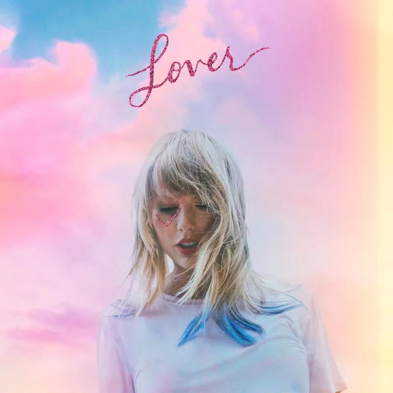

Lyric
Cruel Summer – Taylor Swift (泰勒·斯威夫特)
Lyrics by：Taylor Swift/Jack Antonoff/Annie Clark
Composed by：Taylor Swift/Jack Antonoff/Annie Clark
Yeah yeah yeah yeah
Fever dream high in the quiet of the night
You know that I caught it
Oh yeah you’re right I want it
Bad bad boy shiny toy with a price
You know that I bought it
Oh yeah you’re right I want it
Killing me slow out the window
I’m always waiting for you to be waiting below
Devils roll the dice angels roll their eyes
What doesn’t kill me makes me want you more
And it’s new the shape of your body
It’s blue the feeling I got
And it’s ooh whoa oh
It’s a cruel summer
It’s cool that’s what I tell ’em
No rules in breakable heaven
But ooh whoa oh
It’s a cruel summer
With you
Hang your head low in the glow of the vending machine
I’m not dying
Oh yeah you’re right I want it
We say that we’ll just screw it up in these trying times
We’re not trying
Oh yeah you’re right I want it
So cut the headlights summer’s a knife
I’m always waiting for you just to cut to the bone
Devils roll the dice angels roll their eyes
But if I bleed you’ll be the last to know
Oh it’s new the shape of your body
It’s blue the feeling I got
And it’s ooh whoa oh
It’s a cruel summer
It’s cool that’s what I tell ’em
No rules in breakable heaven
But ooh whoa oh
It’s a cruel summer
With you
I’m drunk in the back of the car
And I cried like a baby coming home from the bar
Oh
Said I’m fine but it wasn’t true
I don’t want to keep secrets just to keep you
And I snuck in through the garden gate
Every night that summer just to seal my fate
Oh
And I scream for whatever it’s worth
“I love you” ain’t that the worst thing you ever heard
He looks up grinning like a devil
And it’s new the shape of your body
It’s blue the feeling I got
And it’s ooh whoa oh
It’s a cruel summer
It’s cool that’s what I tell ’em
No rules in breakable heaven
But ooh whoa oh
It’s a cruel summer
With you
I’m drunk in the back of the car
And I cried like a baby coming home from the bar
Oh
Said I’m fine but it wasn’t true
I don’t wanna keep secrets just to keep you
And I snuck in through the garden gate
Every night that summer just to seal my fate
Oh
And I scream for whatever it’s worth
“I love you” ain’t that the worst thing you ever heard
Yeah yeah yeah yeah
Cruel Summer
Singer: Taylor Swift publish time: 2019-08-23
language：English album：Lover